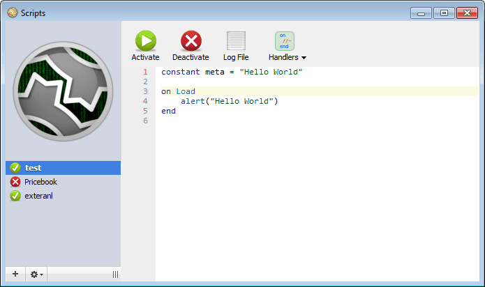
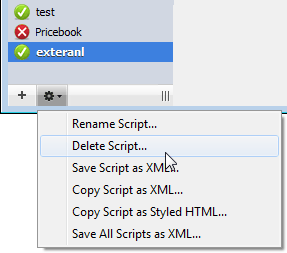
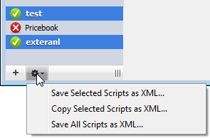

XMLParseFile: Parse an XML file to an
XML document XMLParseString: Parse an XML
string to an XML document
XPathEval:
Extract a node or value from an XML document using XPath notation.
XMLParseFile (path [, nsList])
Result type: An XML document handle
Definition: Parses the XML file. Call this once to
parse an entire XML file which
would normally just append the
string to a string property that you clear in
you may then navigate using XPathEval.
When finished with the document,
the start element handler and use in the end element handler. The
character data handler may be called multiple times with partial
character data for a single element.
Create an expatParserHandle using XML_ParserCreate.
Availability: MWScript scripts in MoneyWorks Gold
v8.1 and later
free it with XMLFree.
If the XML document uses namespaces, evaluating XPaths on it will
require the namespaces to be registered. You can provide the namespaces
in a space separated list in a string with entries in the form ns=uri
(e.g.
"svg=http://www.w3.org/2000/svg dc=http://purl.org/dc/elements/
1.1/" ).
Availability: MWScript scripts in MoneyWorks Gold
v8.1.1 and later
Suite: This function is part of the LibXML/Xpath XML
parsing suite of functions.
See Also:
XMLFree: Free an XML document
XMLParseString: Parse
an XML string to an XML document
XPathEval:
Extract a node or value from an XML document using XPath notation.
XMLParseString (xmlstring [,
nsList])
Definition: Evaluates an XPath in the
context of an XML document that has been parsed with XMLParseFile or XMLParseString or relative
to a node in that document that has been found with a previous call to
XPathEval. When evaluating against the document, use an XPath anchored
at the root node

 /. When evaluating against a
previously found node, use an XPath anchored at the "current node" ./
.
/. When evaluating against a
previously found node, use an XPath anchored at the "current node" ./
.
If the XPath expression identifies an element or set of elements,
then the function result wil be a node handle that you can use with
subsequent calls to XPathEval.
If the XPath expression explicitly requests a string or number (or
boolean)
number(...)
Result type: An XML document handle
result (e.g. using string(...) , value will be a string or a
number.
or .text() ) then the return
Definition: Parses the XML in xmlstring . Call this
once to parse an entire block
If the Xpath node handle you provide is actually a set of nodes, you
should
of XML which you may then navigate using XPathEval.
When finished with
index
provide an
parameter to indicate which node in the set you want to
the document, free it with XMLFree.
If the XML document uses namespaces, evaluating XPaths on it will
require
be the anchor for the relative XPath. Otherwise the first node will
be assumed. The index is 1-based.
the namespaces to be registered. You can provide the namespaces in a
space separated list in a string with entries in the form ns=uri
(e.g.
"svg=http://www.w3.org/2000/svg dc=http://purl.org/dc/elements/
1.1/" ).
Availability: MWScript scripts in MoneyWorks Gold
v8.1.1 and later
Suite: This function is part of the LibXML/Xpath XML
parsing suite of functions.
See Also:
XMLFree: Free an XML document
XMLParseFile: Parse an XML file to an
XML document
XPathEval:
Extract a node or value from an XML document using XPath notation.
XPathEval
(XMLDocumentHandleOrXpathNodeHandle, XpathString [, index])
As a special case you can use number of nodes in a nodeset.
Example:
XPathEval(nodeSetHdl, "count")
Getting indexed elements using the XPath
let doc = XmlParseFile("transactions.xml") // filename only
= use safe path (MoneyWorks Automation folder)
let numTrans = XPathEval(doc, "count(/table/transaction)") // count
nodes using XPath
foreach i in (1, numTrans)
let t = XPathEval(doc, "/table/transaction["+i+"]") // return a
singleton nodeset handle
syslog(XPathEval(t, "string(./ourref)")) syslog(XPathEval(t,
"string(./description)")) syslog(XPathEval(t, "number(./gross)"))
XmlFree(t)
endfor XmlFree(doc)
notation.
[]
to get the
Result type: An XPath node handle, or a string, or a
number — depending on the XPath expression
Getting indexed elements from a nodeset using an index parameter to
XPathEval
Definition: Emit an opening element tag, optionally
with attributes.
let doc = XmlParseFile("transactions.xml") // filename only
= use safe path (MoneyWorks Automation folder)
let transSet = XPathEval(doc, "//table/transaction") // returns a
nodeset with multiple elements
let numTrans = XPathEval(transSet, "count") // special case to get
nodeset count
foreach i in (1, numTrans)
syslog(XPathEval(transSet, "string(./ourref)", i))
syslog(XPathEval(transSet, "string(./description)", i))
syslog(XPathEval(transSet, "number(./gross)", i))
endfor XmlFree(doc)
Example:
Availability: MWScript scripts in MoneyWorks Gold
v8.1.1 and later
Suite: This function is part of the LibXML/Xpath XML
parsing suite of functions.
See Also:
XMLFree: Free an XML document
XMLParseFile: Parse an XML file to an
XML document XMLParseString: Parse an XML
string to an XML document
CreateXMLDoc
()
Result type: An XML document handle
Definition: Creates an XML document that you can use
to generate XML. Use this API to help ensure that the XML you generate
is properly entity- encoded and cleanly formatted.
See Also:
AddXMLElement:
Write an element to an XML document handle BeginXMLElement: Write an opening tag to an
XML document handle EndXMLElement: Write a
closing tag to an XML document FinaliseXMLDoc: Get the finished XML
as a string
BeginXMLElement (xml_hndl, element_name [,
attributesArray])
Result type: none
let xml = CreateXMLDoc() // currently no output path, get as string
via FinaliseXMLDoc
BeginXMLElement(xml, "import", CreateArray("table",
"transaction"))
BeginXMLElement(xml, "transaction") AddXMLElement(xml, "ourref",
"12345") AddXMLElement(xml, "transdate", Today()) AddXMLElement(xml,
"lastmodifiedtime", Time()) AddXMLElement(xml, "gross", 12345.67,
CreateArray("arbitrary_attribute", "decimal"))
AddXMLElement(xml, "description", "Something with < & > in
it and also some ctrl characters\n\n\tand formatting.")
AddXMLElement(xml, "description", "Something with < & > in
it and also some ctrl characters\n\n\tand formatting.", NULL, true) //
encapsulate as CDATA
EndXMLElement(xml, "transaction") EndXMLElement(xml, "import")
let t = FinaliseXMLDoc(xml)
xmltext is formatted thus:
<?xml version="1.0"?>
<import table="transaction">
<transaction>
<ourref>12345</ourref>
<transdate>20250131</transdate>
<lastmodifiedtime>20200925145334</lastmodifiedtime>
<gross arbitrary_attribute="decimal">12345.67</gross>
<description>Something with < & > in it
and also some ctrl characters 	and
formatting.</description>
<description><![CDATA[Something with < & > in it
and also some ctrl characters
and formatting.]]></description>
</transaction>
</import>
Note that numbers are formatted in POSIX format (decimal point and no
thousands separators), and times and dates are big-endian.
See Also:
AddXMLElement:
Write an element to an XML document handle CreateXMLDoc: Create an XML document handle EndXMLElement: Write a
closing tag to an XML document
FinaliseXMLDoc: Get the
finished XML as a string
AddXMLElement
(xml_hndl, element_name, value [, attributesArray] [,boolCDATA])
Result type: none
Definition: Emit a complete XML
element, with opening tag (with optional attributes, entity-encoded
value, and closing tag. If the value is empty then this emits a
self-closing tag. If you pass true for the 5th parameter, the value will
be enclosed in CDATA delimiters. Value can be text, a number, or a date
or time. Dates and times are formatted big-endian (as required by
MoneyWorks when it imports data in XML format).
See Also:
BeginXMLElement: Write an opening tag to
an XML document handle CreateXMLDoc: Create
an XML document handle
EndXMLElement:
Write a closing tag to an XML document FinaliseXMLDoc: Get the finished XML
as a string
EndXMLElement (xml_hndl,
element_name)
Result type: none
Definition: Emit a closing tag. It is up to you to
match closing tags to opening tags.
See Also:
AddXMLElement:
Write an element to an XML document handle BeginXMLElement: Write an opening tag to an
XML document handle CreateXMLDoc: Create an
XML document handle
FinaliseXMLDoc: Get the
finished XML as a string
FinaliseXMLDoc (xml_hndl)
Result type: string
Definition: Returns the complete XML document as a
string, and disposes the document handle.
1 PlatformDocumentPath returns an empty string if document is not
local↩︎
2 Note that a Cheque/Remittance form can only be used with a Payment
transaction if the form is printed from the open transaction window
(i.e. one payment at a time).↩︎
3 If you don't send the selection to Datacentre, the report will need
to run on your machine, which will be significantly slower because of
the large number of network requests it will probably need to make.↩︎
See Also:
AddXMLElement:
Write an element to an XML document handle BeginXMLElement: Write an opening tag to an
XML document handle CreateXMLDoc: Create an
XML document handle
EndXMLElement:
Write a closing tag to an XML document
Scripts, Automation and
the REST of it
MoneyWorks is an extremely powerful accounting and business
information system, but, a bit like a politician, it can please some of
the people all of the time, and all of the people some of the time, but
it can't please all the of the people all of the time. Scripts and
Automation allow you, the people, to extend the functionality of
MoneyWorks, so you can get it to please you all of the time.
Automation is a
technology that was implemented in MoneyWorks 2 (about 1997), when it
was realised that MoneyWorks needed to talk to other programs running on
your computer, or that you wanted to extend the capabilities somehow.
The first script was the famous “PickleOdeon”, developed for a pickle
manufacturer to help manage his pickle recipes.
Automation basically allows other systems to extract information
from, or submit information to, MoneyWorks. Imagine if your costing
spreadsheet could get the cost prices direct from MoneyWorks, or your
CRM system could update customer information in MoneyWorks at the press
of a button. Both these have been possible since the early 2000s.
Automation capabilities were substantially increased in MoneyWorks 6.1
by the implementation of the REST APIs, which allow access to MoneyWorks
Datacentre from remote devices over the internet.
Scripts are a new technology, introduced into MoneyWorks Gold in the
MoneyWorks 7 release (and not available in Express or Cashbook). Scripts
allow you to automate certain operations in MoneyWorks, and can also
change the way that MoneyWorks interacts with the user. For example,
when you enter an item code into a quote, MoneyWorks will normally get
the price from the item details stored in MoneyWorks. With a script, it
could get the price from somewhere else, perhaps even look it up on your
suppliers web site. Similarly you may want to implement your own
pricebook, with possible separate prices for selected items per
customer. Scripting makes this possible, without even needing to leave
the comfort of MoneyWorks.
Scripts can also be used to manage custom controls for report
settings, and also provide “library functions” for the report (see the
Cash Projection Report for an example).
Scripts
Scripts allow you to automate operations within MoneyWorks. They can
read external files (either from your local volumes, or from a web
server), intercept user-interface actions, create and update records and
more.
A number of sample scripts are included in the Acme Widgets sample
file. These are turned off by default, but you can easily turn them on
to see how scripts work, and to play with the scripting language.
You can access the scripts by:
1. Choose Show>Scripts
The Scripts Management window will open.

The first time you do this the scripts window will be empty. In the
example above, there are three scripts (listed down the side). The
“test” and “external” scripts are activated (indicated by the green
tick), whereas the “Pricebook” script is deactivated, so will not run
(indicated by the red cross).
To view a particular script:
The script contents will be displayed in the body of the window,
where it can be edited. If you do edit a script, you will need to
activate it again (see below).
To activate a script
Click the Activate toolbar
icon
A green tick will appear next to the script on the sidebar indicating
that it
If you want a script to just do one thing, the Load handler is the
place to do that thing. Having activated the script and had the Load
handler execute, keep in mind that the script stays loaded, and the Load
handler will execute the next time you (or anyone else) logs into the
document. If you don't want this, you should deactivate the script.
Run Once
If you are writing a script to just do one thing (e.g. do a one-off
export of some information to a file), and do not want the script to be
active for every user of the document when the log in, you can use the
Run Once button to just call the
Load
Unload
has been activated. If there is a syntax error in the script (i.e.
some invalid text that the script compiler doesn't recognise), the
script will not activate,
and
handlers. The script won't remain active.
and a tooltip will
alert you to the error and where it occurs (and the part the script at
and following the error will be coloured orange).
To deactivate a script
Click the Deactivate toolbar icon
If the script has an Unload handler, it will be called.
After the script is unloaded, a red cross will appear next to the
script's name in the sidebar indicating that it is no longer active.
Note: If the script contains a public handler, any
other scripts that use that handler will also be deactivated.
"Running" scripts
Usually, scripts will implement Handlers that allow the
script to respond to certain user actions (like opening a window for a
record, clicking a custom toolbar icon, or tabbing out of a particular
field). The Load handler can be considered the main entry point
of a script in that Load is called when you activate the script
or the script is auto-activated when you log in to the document.
Sample Scripts:
The following sample scripts are included in the Acme Widgets file.
These are useful, fully functional scripts that extend MoneyWorks
capabilities. As they may change your data in some form, we strongly
recommend that you experiment with them in Acme Widgets (or a copy of
your real data file) before using them in a live document.
POS Rounding: Rounds an item receipt or invoice to
the nearest 5 or 10 cents (or other currency unit, depending on
settings). Intended for a point of sale environment.
Utilities: A set of useful utility scripts.
Apply Landing Costs: Apportion the nominated landing
cost value over a supplier invoice to include the landing cost in any
stocked items on the invoice.
Pick List: Generate a new sales order based on the
highlighted item records;
Auto Make Journal: When a manufactured item is
entered into the heading of a Make journal, automatically completes the
journal with the components. Can be modified to go several levels deep
for components that are themselves made;
Update BOM
Costs: Recalculates the bill of materials costs for the
highlighted built items. By default the maximum depth for components is
5, but this can be changed in the script;
Filter Sort: A script to reorder a nominated list
filter;
Make PO Item: A script that takes an account code
keyed into a purchase order and automatically makes a corresponding
“Other” item;
Update Currency Rates: A script that, once a week,
silently gets the exchange rates from Yahoo and updates the rates in
MoneyWorks.
See Deploying Scripts for
details on how to move these scripts from one file to another.
To Create a New Script
Click
the plus icon at the bottom left of the scripts window
You will be asked to enter the script name.
Note that the name must be unique (you cannot have two scripts with
the same name).
The Add a new UI Form option is used to design and create
your own windows. This is covered in the UI Builder
section.
Hello
Your Load handler will be called and the alert will be displayed. The
script will then be unloaded. One and done.
While this is a good way to test things out, it's not useful for
adding features to MoneyWorks. For that you want the script to remain
active and respond to events.
Now change the script to
the following:
constant meta ="My better Hello World"
on Hello
Alert("Hello World!")
end
on Load
InstallMenuCommand("Hello World", "Hello")
end
If you click Run Once, nothing will (apparently)
happen. The Load handler installs a menu command but then it will be
removed when the script is auto-unloaded.
Your script is compiled and loaded, and remains active. Look in the
Commands menu and you will find your new command at the bottom called
"Hello World".
Enter the script name and
click OK
A new script will be created.
When you select this menu item, MoneyWorks will call your
Congratulations! you've added a feature to MoneyWorks.
handler.
As an example, copy and paste the following script into the editor
for your new script:
At this point, with the script activated, if you close the script
window and log out of the document and then log back in, your Hellow
World command will still be there, because the script will be reloaded
when you log in. Furthermore, if you are logged into a document on
MoneyWorks Datacentre, closing the script window (or Saving) will save
the scripts to the document and when anyone else logs in, they will also
get your Hello World command! (if they were already logged in, they will
get the changes the next time they log in).
Click Run Once.
constant meta ="My Hello World"
on Load
Alert("Hello World!")
end
To Delete an Existing Script
Click on
the Cogs icon on the bottom left of the script window and select Delete
Script

You will be asked for confirmation
Click OK to delete the script
To Rename a Script
Select the script to rename by clicking on its name on
the sidebar
Click on the Cogs icon on the bottom left of the script
window and select Rename Script
Enter the new script name (which must be unique) and
click OK
The script will be renamed and deactivated. You will need to
reactivate the script if required.
Note: If the script contains a public handler, any
other scripts that use that handler will also be deactivated. You will
need to alter the handler calls in these other scripts to reflect the
new script name.
Deploying Scripts
Scripts are (normally) stored within the MoneyWorks document itself.
When you close the scripts window, any changes you have made are writtin
to the MoneyWorks document. All of the active scripts will be loaded by
every user the next time they log in.
If you want to move them to another MoneyWorks file, you can copy the
text out of the script window, then create an empty script in the other
document and paste it in there.
Alternatively (and easier) scripts can be saved as an xml file. When
such a file is double-clicked in the FInder or Windows Explorer,
MoneyWorks will offer to install it into the currently open/connected
document. This means you can easily send scripts to other MoneyWorks
users. As of MoneyWorks Gold 9.1.4, you also have the option of just
activating scripts in a .mwxml on your computer without saving them into
a document to be loaded by everyone. You will still need to have the
Scripting privilege for the document you are logged into though. You can
also do the same for a single script in a .mwscript file which is just a
plain text file. For the really advanced, it is also possible to "run"
a
.mwscript file using the moneyworks command line tool. To save a
script for transfer to other document:
Click on the Cogs icon on the bottom left of the script
window and select Save Selected Script as XML
The standard file dialog will open
Choose
the location (and name if desired) for the xml script file and click
Save
Note that the file extension must be .mwxml. A copy of the script
will be saved as a file in the nominated location.
Other options in the
cogs menu:
Save all scripts as XML: All scripts will be
saved in a single .mwxml file. If such a file is double-clicked (with a
MoneyWorks document open), you will be prompted to install each script
separately.
Copy Script as XML: The script will be copied to
the clipboard as XML (and can be pasted into another MoneyWorks
file).
Copy Script as Styled HTML: The script will be
copied as html—handy for documenting your script. The script below was
copied in this manner:

constant meta = "Hello World" on Load
alert("Hello World")
end
Deploying selected scripts
You can highlight more than one script (and/or UI Form Layouts, which
are also displayed in the sidebar) by Cmd/Ctrl clicking on each one in
the sidebar. The cogs pop-up menu then has the option to save the
selected scripts. You actually don't need to travel down to the cogs
menu; you can right-click on a selection of scripts to get the menu
right under your mouse.
The MWScript Language
The MWScript expression syntax is compatible with the existing
MoneyWorks expressions that you use in custom forms and reports.
MWScript simply adds handlers and statements. Flow control is closely
analogous to that provided by the report writer.
Normally a newline marks the end of a statement. So one statement per
line. The only exception to this is that string constants (as of v9.1.8)
may contain newlines which will result in a statement continuing over
multiple lines,
Types
MWScript supports the same types as are available in the report
writer. As in the report writer, the language is very weakly typed
(values are freely type- promoted as necessary).
Type Example
Number 5.35
Date '1/1/13' — note that single quotes are for dates, not text
strings
Text strings "mwscript" or `also a string `. You can embed one
kind of string delimiter inside a string that begins and ends with the
other kind of delimiter `string with " inside it `. You can also escape
a delimiter using a backslash. You can also include newlines and tabs
using backslash escape codes "\t\n\"" .
Finally, as of v9.1.8 Nowdoc-style multiline string constants may
also be used. A nowdoc string begins with a delimiter that you define
using <<DELIM and then ends with the delimiter you defined on a
line by itself: DELIM . You can also have an inline Nowdoc string where
the closing delimiter is on the same line as the start. In this case,
the initial delimiter definition ends with a space, which is not part of
the string. e,g:
<<NOWDOC inline dowdoc stringNOWDOC
Selection — create via CreateSelection(tableName, search)
function.
Table — create via CreateTable() function.
Record — created by looping over a selection with
foreach
Associative Array — create with the CreateArray()
function
Associative arrays use the syntax arrayname[key], where
key can be any text up to 31 characters, an integer, or a date
(internally, integers and dates are represented as text formatted so
that lexical sort order matches numeric/ date sort order). Data values
can be any other type.
let myArray = CreateArray() let myArray[0] = "thing"
let myArray["mykey"] = myArray[0] let myArray['31/1/12'] = 500
You can declare a simple-type property to be persistent. If you do
this, MoneyWorks will automatically save and load its value (locally, on
each client) when your script is Loaded and Unloaded.
persistent property MyPrefValue = "foo"
Arrays, like Tables, are always passed by reference, so if you assign
an array to another variable, or pass it as a parameter to a function,
you are not copying the array. If you want to copy an array, you must
allocate a new array with CreateArray and explictly copy all of its
members.
Handle — some objects are referenced by an opaque handle. This
includes window and list handles that MoneyWorks might pass to your
script, and also File handles, JSON parser handles, XML parser handles
etc that are returned by creation functions. Where noted in the
documentation for a creation funciton, you may need to explicitly free
such handles when you are finished with them. You do not need to
explicitly free tables, arrays, or selection.
Properties
Properties are variables that last for the lifetime of the script.
They are instantiated each time the script is loaded and discarded on
unload.
Properties are defined outside of message handlers.
property mytextglobal = "qwertyuiopasdfghjklzxcvbnm"
If you need a property to be persistent across sessions, you can
store the value in the database (the User2 table is appropriate for
this, see the SetPersistent and GetPersistent functions). Load the value in
the script's Load handler (or lazily load the first time it is needed),
and store it in the Unload handler if it changed. Keep in mind that
every user will be executing the script with their own copy of the
properties, so you may need to take steps to stop one user from
clobbering values stored by another user, or you might use the user's
login initials as part of the storage key to store per-user
settings.
Note that these persistent values are stored per client machine and
all scripts for all documents the client might open or connect to are in
the same namespace. Once the script has been run once on a particular
computer, keep in mind that the value of the property at load can be
different from the value that it appears to be initialised to in the
script. To store persistent values per- document, use the SetPersistent and GetPersistent functions.
Constants
Constants are named values for use within the script. Constants are
defined outside of message handlers.
IMPORTANT: Every script should declare a constant with the name meta
, which will be used when reporting errors the script might generate.
The string should therefore provide a way for them to contact you.
constant meta = "Script for Something by Your Name and your URL"
The meta contant will be used by MoneyWorks to identify your script
to the user. It must be a string.
Handlers
A handler defines a callable function with optional
named parameters and an optional return value. A handler is a peer of
the built-in intrinsic functions and can be used in expressions in the
same way.
A handler is defined by the
keyword on , followed by the handler name and an optional list of
parameter names. The handler body ends with the keyword on a line by
itself.
end
MoneyWorks will automatically call some specially-named handlers
automatically to allow you to intercept various UI functions. All you
need to do is include the handler in your active script, and MoneyWorks
will call it (see the next section, Standard Handlers).
If a parameter required by your handler is not supplied by the
caller, then the value will be NULL. Parameters are untyped, so if
callers don't provide a value of the correct type, you should convert
the type yourself to the required type (usually using TextToNum or
NumToText)
elseif anothercondition // can have any number of these
// do something else else // up to one of these
// do other thing endif
The long form effectively provides switch/case functionality.
While loops
General looping can do done with a while loop. Loops can make use of
the
and statements for early exit or short circuit (just as in C-like
break
continue
Comments use the C++ form.
while condition
if special_condition
break // exit the loop endif
if another_condition
continue // go back to top of loop, skipping do stuff endif
// do stuff endwhile
for a to-end-of-line comment;
and to
languages, and the report writer).
begin and end a block comment that can span lines or within a
line.
//
/*
*/
Assignment
The statement assigns the result of an expression to a new or
existing
let
variable. If the variable has not previously been seen in the handler
and is not a property, then it is implicitly declared as a local
variable in the handler.
let myVar = Today() + 7 // adding a number to a date adds that many
days
For loops
There are several kinds of for loops that operate on different kinds
of collections
foreach
Conditionals
Conditional flow control is done with if , elseif , else , and endif
. Zero or
or ranges. Each kind starts with the keyword
The general form is
and ends with endfor .
more clauses are allowed for an if , followed by zero or one
elseif
else
clause, followed by an endif . Short form:
if condition
// do something endif
And the long form:
foreach loop-control-var in
type-keyword expression
Foreach declares a local loop control variable whose scope is limited
to the loop body. Type keywords can be:
table names are: account , ledger , general , department , link ,
transaction , detail , log , taxrate , message , name , payments ,
product
(items), job , build , jobsheet , bankrecs , autosplit , memo , user
, user2 , offledger , filter , stickies , lists , login , contacts ,
inventory , assetcat and asset . The expression must yield a selection
variable for the
if condition
// do something
specified table. The loop control variable is a record, whose fields
can be accessed by suffixing the variable name by a field name (e.g.
rec.ourref). The variable used on its own will yield a 1-based
index.
the keyword text which will iterate over words or lines in comma
or newline delimited text. The delimiter is determined automatically—if
there is at least one newline, then iteration is by line, otherwise
iteration is by comma. Every line of multiline text should terminate
with a newline (including the last one!).
the keyword textfile that will iterate over lines in a textfile
loaded from the local filesystem using the "file://" scheme, or from an
HTTP server using the "http://" or "https://" scheme. You can use the
http scheme to access data from remote data sources (e.g. REST servers.
It retrieves data using the GET operation only). If the path is
supplied, it must be in the temp directory, the custom plugins
directory, MoneyWorks app support directory, or have a file extension of
.txt or .csv. If the path is specified by the user, it can be anywhere
or have any extension (but obviously should be a text file). Anywhere
outside these locations will need to be specified in a file open dialog
box by the user (which will be automatically invoked for any invalid or
empty path).
the keyword array which will iterate over key values in an
associative array variable;
and finally no keyword but rather a parenthesis-enclosed pair of
values defines a simple numeric range (with an optional step value). The
values can be full expressions but must be numeric. If the finish value
is less than the start value, no iterations will occur (unless the step
is negative).
Foreach variants:
endfor
// note that (100, 1) will iterate 0 times, unless you supply a
negative step
// log the numbers 100, 90, 80, ... 0
foreach i in (100, 0, -10) syslog(i)
end for
Array Example:
// foreach in array iterates over keys; get the value by subscripting
with the key
foreach key in array anArray
syslog(key + " = " + anArray[key]) // key is always text end for
List Example:
// comma-delimited text
foreach w in text "foo, bar, baz" syslog(w)
endfor
// newline-delimited text
foreach line in text "firsttlinensecondtlinenlasttlinen"
syslog(line)
end for
Selection Example:
Running Scripts
foreach rec in transaction CreateSelection("transaction",
"status=`P`")
foreach rec in account someSelectionICreatedEarlier foreach word in
text "foo, bar, baz"
foreach line in textfile "file://" foreach line in textfile "http://"
foreach key in array myArrayVar foreach i in (0, 10) // integers
foreach i in (100, 0, -10) // integers with optional step
// loop control is of record type; use dot-notation to access
fields
// the naked loop contol variable is a 1-based index
foreach a in account CreateSelection("account", "code=`1@`")
syslog("record #" + a + ": " + a.code + " " + a.description)
end for
Range Example:
// log the numbers 1...100 foreach i in (1, 100)
syslog(i)
You can install multiple scripts in a document and enable or disable
them individually.
Use the Show Scripts command to show and edit the scripts installed
in a document. Note that only one user at a time can make changes to
scripts.
You can add, delete, and rename scripts (use the icons at the bottom
of the sidebar).
Active scripts are
loaded at login and unloaded at logout, and a script is also
unloaded/reloaded when you click the Activate button in the script
editor toolbar (the old version of the script is first unloaded if it
was loaded, then the modified script is compiled and loaded).
You can keep inactive scripts in a document. They won't do anything
until you activate them.
You can use an inactive script to store boilerplate text for other
purposes (such as a mail template, html, json etc). See GetScriptText. As of v9.1.8 you can also store
such boilerplate text conveniently within your script using a Nowdoc
string.
Stopping problematic scripts
If you write a script that gets into an endless loop, you should be
able to stop it using the Stop button in the script progress window that
will appear when the script is busy for more than a few seconds. The
Stop button is available for any user who has the Scripting privilege.
This will not deactivate the script; it will just terminate execution of
the current handler.
If you write a script that gets into an endless loop putting up alert
windows, you will not get a progress window Stop button. If a script
presents an alert, any user with Scripting privileges can stop the
script by holding down the ctrl+shift keys when clicking the alert's
button. You will get a further alert asking if you want to disable the
script. Note that if you disable (deactivate) a script, be sure to
reactivate it before closing the script window because otherwise it will
be deactivated for all users.
If you write a script that causes problems in its Load handler,
thereby preventing you (or anyone) from logging in, you can suppress the
loading of document scripts by holding down Option+Shift (Mac) /
Ctrl+Shift (Windows) when logging in. Note that this option is available
only for users who have the Scripting privilege.